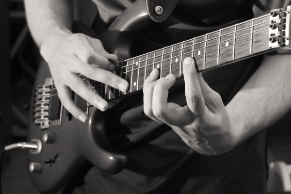
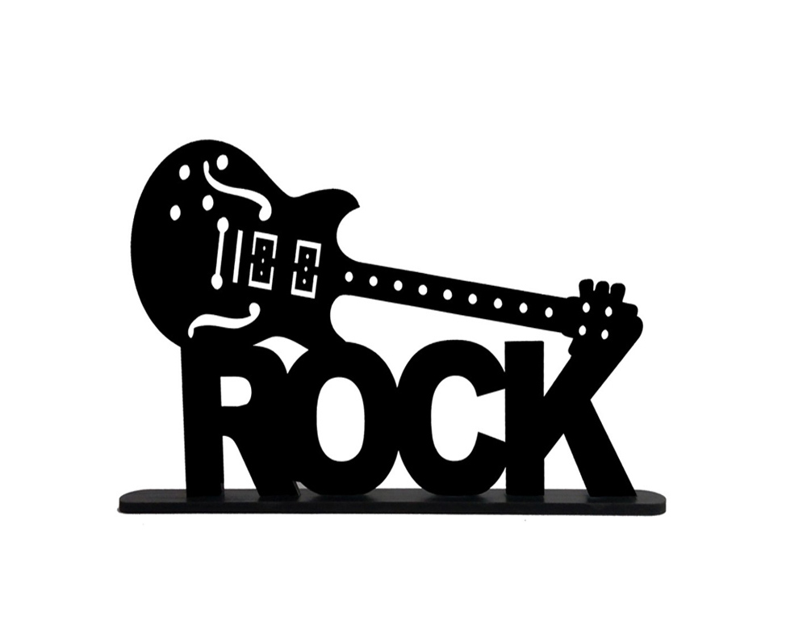

Guitarristas podem atuar como solo ou tocar com orquestras e bandas
de uma variedade de gêneros.

Técnica é tudo!
Para todos!
Para crianças, jovens e adultos, metodologia premiada e aulas que atendem iniciantes, intermediários e avançados.
CONTEÚDO DO CURSO
Musicalidade
Técnica
Harmonia
Melodia
Ritmo
Banda
Setup
Bônus
Depoimentos:
Aula incrivel! Cada aula um novo aprendizado. Sempre saio melhor do que entrei! Obrigado professor pelo conhecimento!
NicolasExcelente professor, super dedicados! Recomendo, façam uma aula teste!
FernandaÓtimo relacionamento com os alunos. Está sempre buscando inovar e oferecer o melhor.
JoãoEstilos musicais
